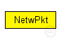
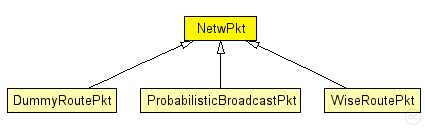

This documentation is released under the Creative Commons license
This documentation is released under the Creative Commons licenseA basic network layer packet definition
subclass if you want to create your own network layer packet class
The basic network packet contains a destination and source network address. Additionally a time to live (ttl) field can be defined in order to limit the maximum number of hops the messge will travel. The sequence number is guranteed to be unique for all packets generated by one host
Author: Daniel Willkomm
The following diagram shows usage relationships between types. Unresolved types are missing from the diagram. Click here to see the full picture.
The following diagram shows inheritance relationships for this type. Unresolved types are missing from the diagram. Click here to see the full picture.
| Name | Type | Description |
|---|---|---|
| DummyRoutePkt | message | (no description) |
| ProbabilisticBroadcastPkt | message | (no description) |
| WiseRoutePkt | message | (no description) |
| Name | Type | Description |
|---|---|---|
| destAddr | LAddress::L3Type |
destination address |
| srcAddr | LAddress::L3Type |
source address |
| ttl | int |
time to live field (IP) |
| seqNum | unsigned long |
sequence number |
// A basic network layer packet definition // // subclass if you want to create your own network layer packet class // // The basic network packet contains a destination and source network address. // Additionally a time to live (ttl) field can be defined in order to limit the // maximum number of hops the messge will travel. The sequence number is guranteed // to be unique for all packets generated by one host // // @author Daniel Willkomm packet NetwPkt { LAddress::L3Type destAddr; // destination address LAddress::L3Type srcAddr; // source address int ttl = 1; // time to live field (IP) unsigned long seqNum = 0; // sequence number }
This documentation is released under the Creative Commons license